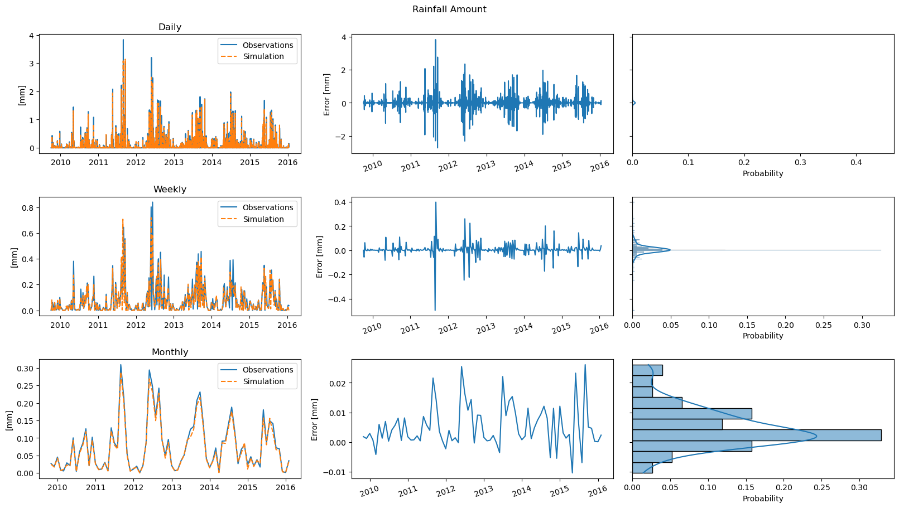
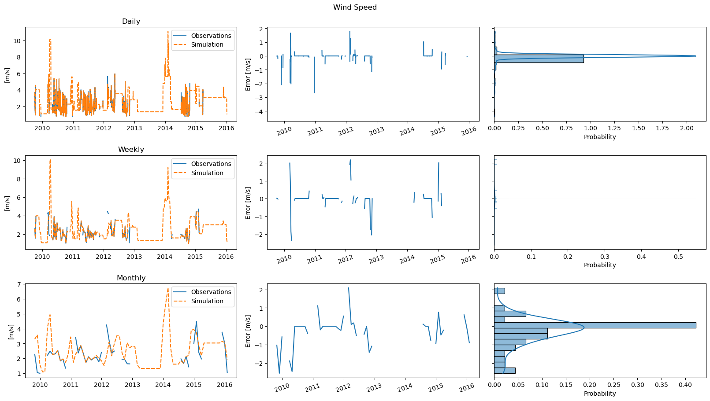
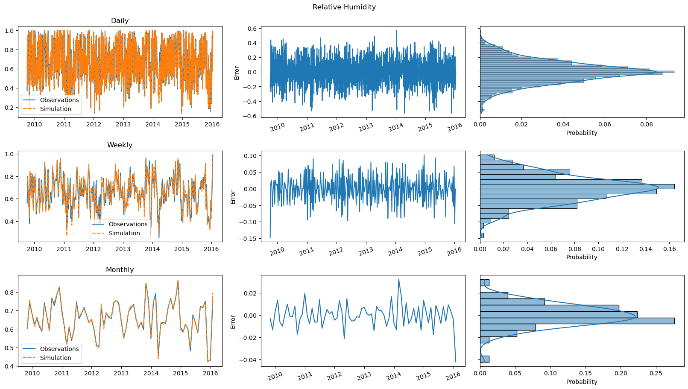
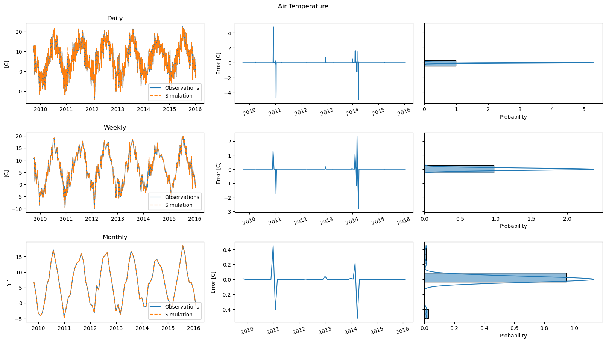
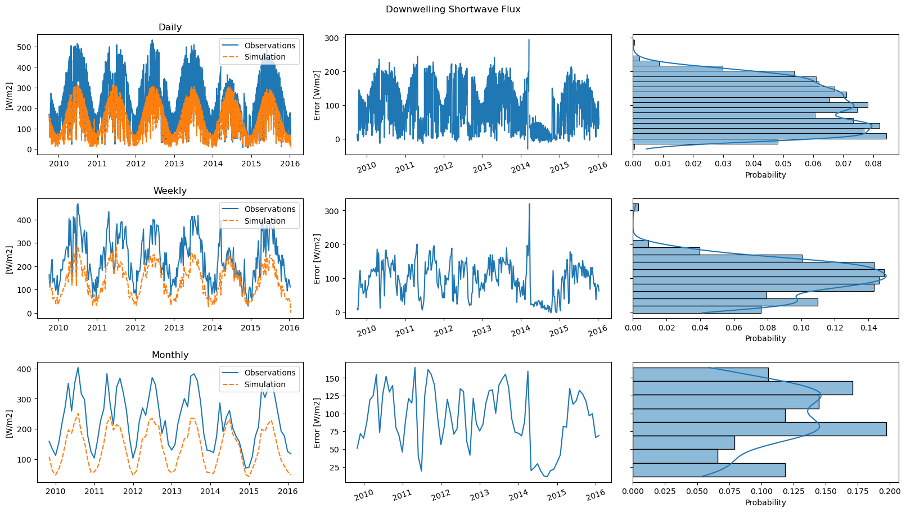
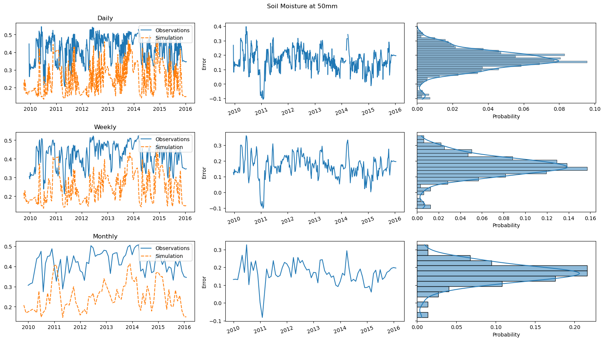
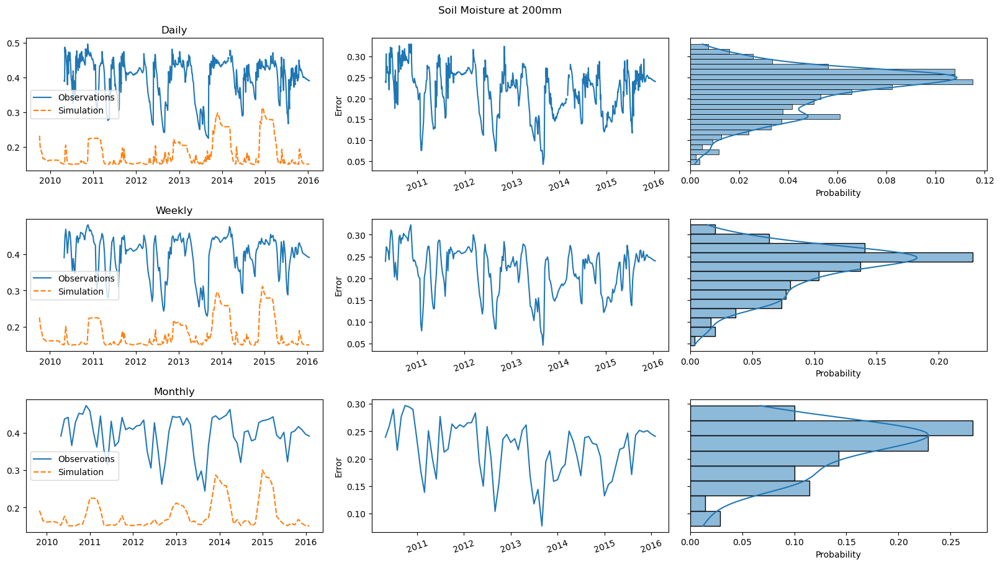
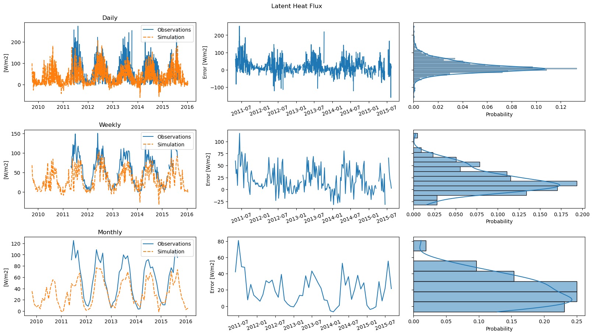
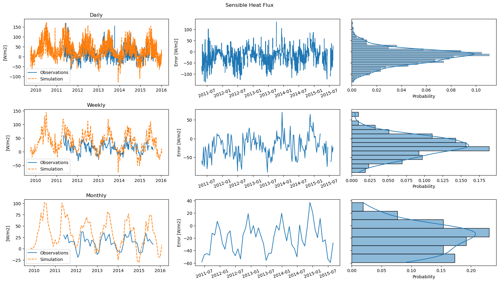

Example of Plots using GEOtoPy¶
import pandas as pd
import matplotlib.pyplot as plt
from IPython.display import display, Markdown
from mhpc_project.matsch_b2 import FullModel
from geotopy.utils import date_parser, comparison_plot
import scrapbook as sb
model = FullModel('../data/Matsch B2/geotop')
simulation = model()
meteo_targets = [('rainfall_amount', 'mm', 'Rainfall Amount'),
('wind_speed', 'm/s', 'Wind Speed'),
('relative_humidity', None, 'Relative Humidity'),
('air_temperature', 'C', 'Air Temperature')]
meteo = pd.read_csv('../data/Matsch B2/geotop/meteo0001.txt',
parse_dates=[0],
date_parser=date_parser,
na_values=-9999,
index_col=0)
for name, unit, desc in meteo_targets:
display(Markdown(f"# {desc}"))
fig = comparison_plot(meteo[name],
100 * simulation[name] if name == 'relative_humidity' else simulation[name],
desc=desc,
unit=unit)
sb.glue(name, fig, 'display')
plt.close()




obs_targets = [('surface_downwelling_shortwave_flux', 'W/m2', 'Downwelling Shortwave Flux'),
('soil_moisture_content_50', None, 'Soil Moisture at 50mm'),
('soil_moisture_content_200', None, 'Soil Moisture at 200mm'),
('latent_heat_flux_in_air', 'W/m2', 'Latent Heat Flux'),
('sensible_heat_flux_in_air', 'W/m2', 'Sensible Heat Flux')]
observations = pd.read_csv('../data/Matsch B2/observations/obs.csv',
parse_dates=[0],
date_parser=date_parser,
index_col=0)
for name, unit, desc in obs_targets:
display(Markdown(f"# {desc}"))
fig = comparison_plot(observations[name],
simulation[name],
desc=desc,
unit=unit)
sb.glue(name, fig, 'display')
plt.close()




